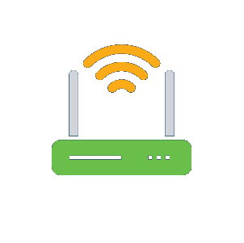
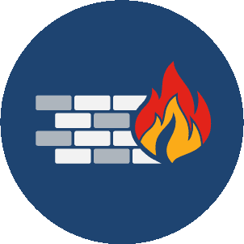

Explain the basics of being safe online, including what cybersecurity is and its potential impact.
Explain the most common cyber threats, attacks and vulnerabilities.
Explain how organizations can protect their operations against these attacks.
Access various information and resources to explore the different career options in cybersecurity.
Module 4 - Protecting the Organization
Welcome to this module, which will outline the various strategies and tools used by cybersecurity
professionals to protect an organization’s network, data and equipment from cybercrime.
You only have to look at the news to understand that all organizations, regardless of type, size or
location, are at risk of a cyber attack. It seems that no one is safe.
So is there anything you can do to help protect an organization from a targeted attack? And with many in
the security industry predicting that it’s not a case of ‘if’ but ‘when’ a cybersecurity breach will
occur, how can you respond to ensure that it has minimal impact?
This module will highlight the actions that you can take to help answer these questions.
Chapter 4.1 - Cybersecurity Devices and Technologies
There is no single security appliance or piece of technology that will solve all the network security
needs in an organization. You must consider what tools will be most effective as part of your security
system.
4.1.1 Security Appliances
Security appliances can be standalone devices like a router or software tools that are run on a
network device. They fall into six general categories.
Find out more about each of these.
Routers

While routers are primarily used to interconnect various network segments together, they
usually also provide basic traffic filtering capabilities. This information can help you
define which computers from a given network segment can communicate with which network
segments.
Firewalls

Firewalls can look deeper into the network traffic itself and identify malicious behavior
that has to be blocked. Firewalls can have sophisticated security policies applied to the
traffic that is passing through them.
Intrusion prevention systems
IPS systems use a set of traffic signatures that match and block malicious traffic and
attacks.
Virtual private networks
VPN systems let remote employees use a secure encrypted tunnel from their mobile computer
and securely connect back to the organization’s network. VPN systems can also securely
interconnect branch offices with the central office network.
Antimalware or antivirus
These systems use signatures or behavioral analysis of applications to identify and block
malicious code from being executed.
Other security devices
Other security devices include web and email security appliances, decryption devices, client
access control servers and security management systems.
4.1.2 Which Is It?
You ask the Chief Technology Officer (CTO), who explains that the following security appliances are
in place. Can you identify which category each of these falls into?
Select an option from each!
Cisco’s ISR 4000 provides routing, filtering and encryption in a single platform.
Cisco’s Firepower 4100 Series shows what’s happening on the network so that you can act
faster in the face of a cyber attack
Cisco’s AnyConnect Secure Mobility Client empowers remote workers with highly secure access
to @Αpollo's network from any device, at any time, in any location
Cisco’s AMP provides next-generation endpoint protection, scanning and constantly monitoring
files for malicious behavior